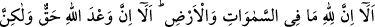
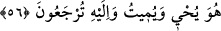

55. İyi bil ki göklerde ve yerde ne varsa hepsi Allah’ındır. İyi bil ki Allah’ın vaadi
gerçektir, fakat onların çoğu bilmezler.
“İyi bil ki” Fahreddin Râzî şöyle der: “ ” kelimesi, ancak gafillerin dikkatini
çekmek için kullanılır. Bu âlemin insanları zahirî sebeplere bakmakla meşgul oldukları
için varlıkları, mecâzî ve görünen sahiplerine nisbet ederler. Meselâ “Bu ev Zeyd’e
aittir. Bu köle Amr’ındır. Saltanat, halifenindir. Tasarruf yetkisi vezirindir.” gibi sözler
söylerler. Böylece de cehalet ve gaflete dalarlar. Çünkü bu izafetlerin doğru olduğunu
zannederler. İşte bu sebeple Cenab-ı Hak da bu gaflet uykusunda uyuyanlara: “ (iyi
bilin ki)” sözüyle seslenmiştir.”
“göklerde ve yerde ne varsa hepsi Allah’ındır.” Çünkü Hak Teâlâ dışındaki tüm
varlıkların zâtı itibâriyle mümkin varlıklar olduğu sâbittir. Zâtı itibâriyle mümkin olan
varlıklar ise doğrudan ya da vasıtasız olarak zâtı itibârıyla vâcib varlığa dayanırlar. O
zaman Allah’tan başka tüm varlıkların O’nun sahip olduğu şeyler olduğu kesinleşmiştir.
O, bu varlıkları var etmek-yok etmek, sevab vermek-cezalandırmak gibi dilediği
tasarrufta bulanabilir.
“İyi bil ki Allah’ın vaadi gerçektir.” Yani Allah’ın vaad ettiği sevap da azap da
gerçekleşecektir ve bu vaadde bir cayma olmayacaktır.
Bu durumda âyetteki vaad, vaad edilen mânâsındadır. “Hak” ise sabit ve
gerçekleşecek anlamındadır. Ama vaadin aynı zamanda masdar mânâsında anlaşılması
da caizdir. O zaman da “hak” gerçeğe uygun düşen demek olur. Yani: “Allah Teâlâ’nın
bu zikredilen şeylere dair vaadi, gerçeğe uygundur.” “Fakat onların çoğu” akıllarının
eksik, kendilerini gaflet bürümesi, sâdece alışılan ve hissedilen fiilleri anladıkları için
bunu “bilmezler.” Çünkü onlar dünya hayatının sadece görünen bir yönünü biliyorlar,
sonra da dediklerini deyip yaptıklarını yapıyorlar.
Bu dar mecliste kalmış
His gözü bu dünyadan başkasını görmez
Gönül gözüne söyle perdeleri aradan kaldırsın
Âhiret mülkü tarafına nazar etsin
Kuşu (ruhu) kafeste hapis kalan kişi
Bağ bahçenin nasıl olduğunu ne anlasın